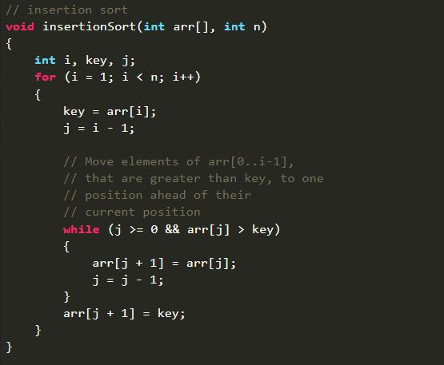

Bubble sort is a sorting algorithm that compares two adjacent elements and swaps them until they are in the intended order.
Just like the movement of air bubbles in the water that rise up to the surface, each element of the array move to the end in each iteration. Therefore, it is called a bubble sort.
** In this visualizer , when we go for bubble sort it compares two elements which is represented by blue color. The red color represents the unsorted array and green represents the sorted part of the array.
For more details visit : here
Insertion sort is a simple sorting algorithm that works similar to the way you sort playing cards in your hands. The array is virtually split into a sorted and an unsorted part.
Values from the unsorted part are picked and placed at the correct position in the sorted part.
** In this visualizer , when we go for Insertion Sort , it compares two element which is represented by blue color. The green color part of the array is the sorted part of array and the white color part is the unsorted part of the array.
Here we pick one element from unsorted part of the array and insert it in sorted array with it's correct position.
For more details visit :here
Selection sort algorithm sorts an array by repeatedly finding the minimum element (considering ascending order) from the unsorted part and putting it at the beginning.
The algorithm maintains two subarrays in a given array.
The subarray which already sorted.
The remaining subarray was unsorted.
In every iteration of the selection sort, the minimum element (considering ascending order) from the unsorted subarray is picked and moved to the sorted subarray.
For more details visit :here
Quicksort is a Divide and Conquer algorithm. It picks an element as a pivot and partitions the given array around the picked pivot.
pick pivot in different ways.
Always pick the first element as a pivot.
Always pick the last element as a pivot
Pick a random element as a pivot.
Pick median as the pivot.
For more details visit :here
The Merge Sort algorithm is a sorting algorithm that is based on the Divide and Conquer paradigm. In this algorithm, the array is initially divided into two equal halves and then they are combined in a sorted manner.
For more details visit :here
Heap sort is a comparison-based sorting technique based on Binary Heap data structure. It is similar to the selection sort where we first find the minimum element and place the minimum element at the beginning. Repeat the same process for the remaining elements.
For more details visit :here